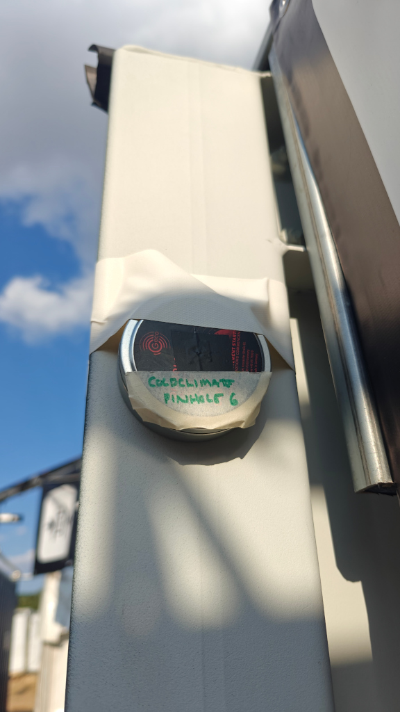
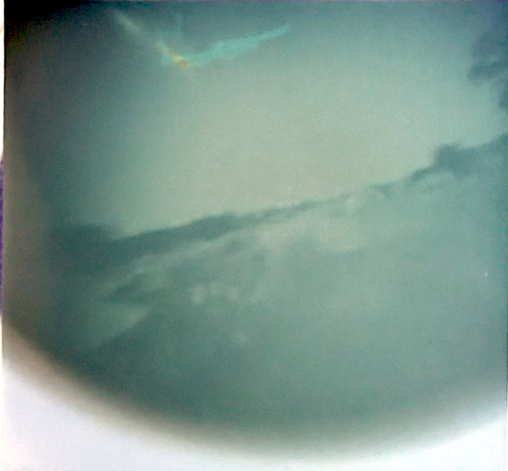
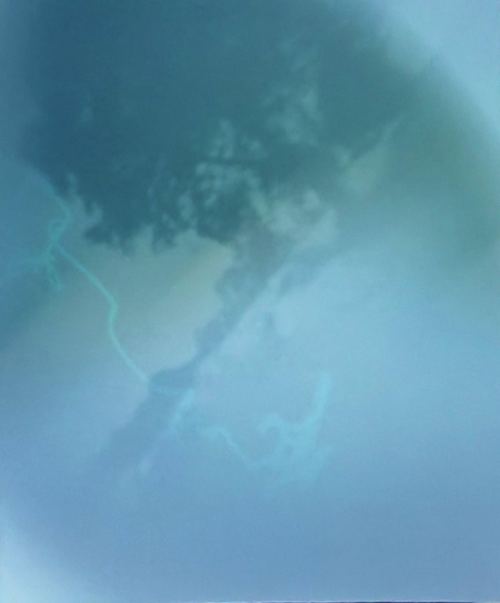
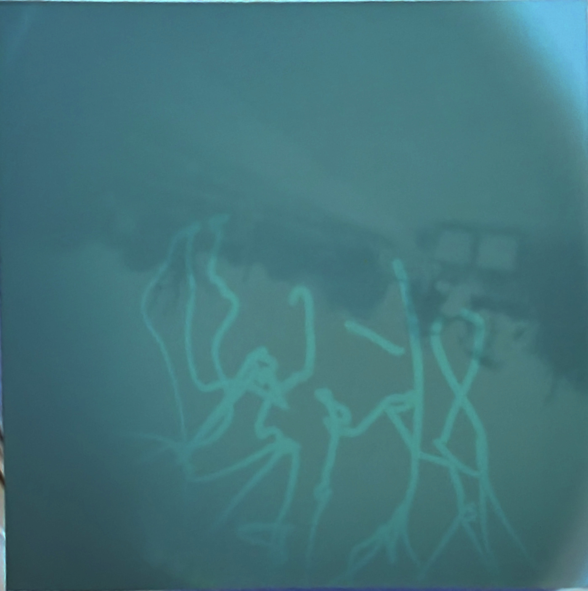

I've been facinated with pinhole cameras for a few years. I've used numerous Solarcans over the years but for EMF26 I decided to have a go at making some of my owns and seeing what they captured.
I orginally planned to make 10 cans, and to change the paper in them every day but I didn't get my arse in gear. I also got my maths wrong and made the pinholes too small, so the first round of cans that went up captured nothing. Luckily, I coud fix the problem by ripping off the tinfoil that I'd used to cover the larger holes I'd made (ever tried drilling a 0.02mm hole in an ammo tin?), so I reloaded the paper and stuck them back up.
The tins were picked out of the bin at my airgun club. They're 8cm across and 1.5cm deep. I drilled a 0.2mm hole in the centre of each one, taped tinfoil over it and then poked a 0.02mm hole though those.
The paper is Ilford Multigrade Paper V RC Deluxe Pearl, cut into squares in my back kitchen with the lights off.
I used the magic combination of magnets and ductape to stick them in a few places. Thanks to all the volenteers, especially Ollie in NullSector for helping me get access




I plan to do this again, but next time I shall